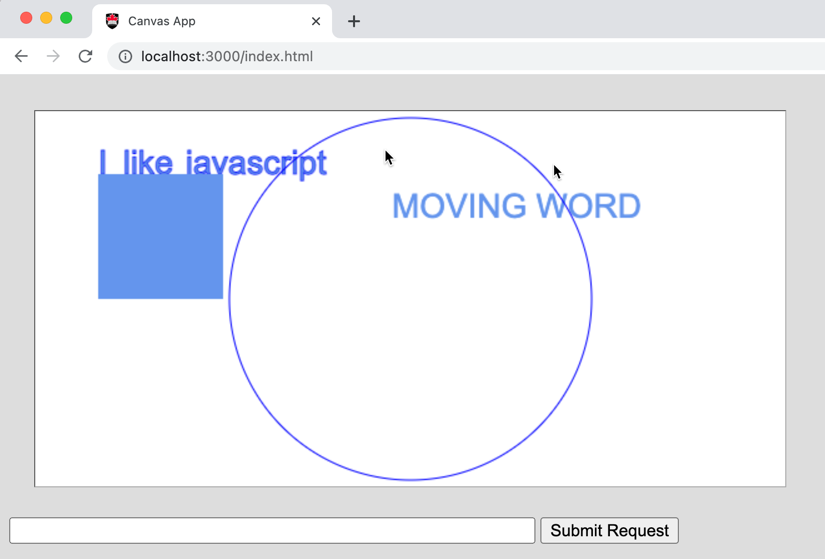
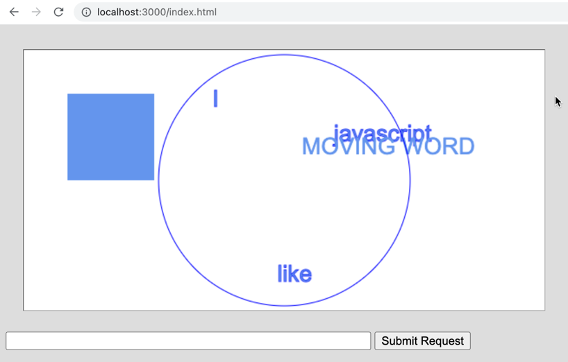
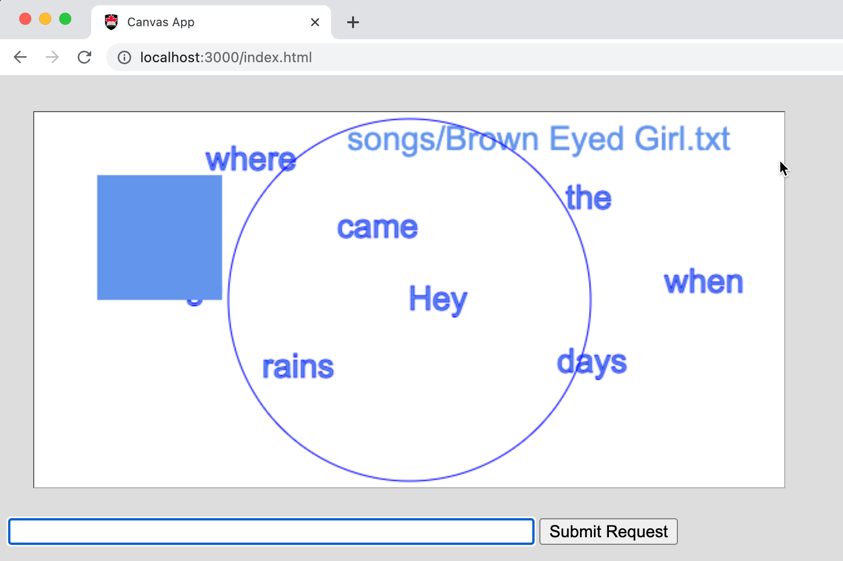
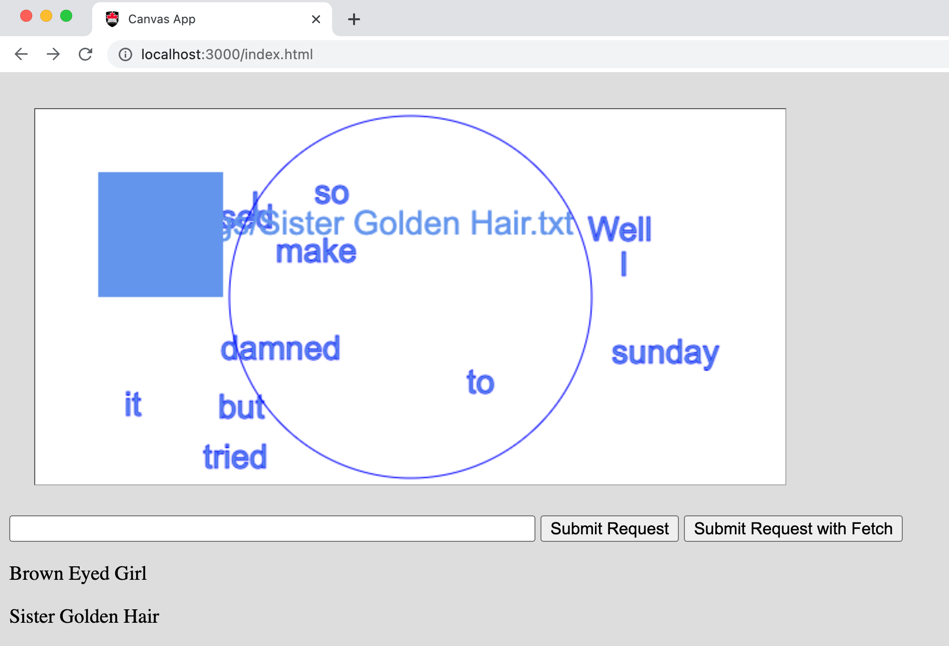

COMP 2406 - Fall 2023 Tutorial 03
Client-Server JSON Data
© L.D. Nel 2023
Revisions will be noted here
Description:
This tutorial introduces you to the basic architecture of a single-page web application that uses a <canvas> element. Many web apps are not just html DOM elements but have a lot of graphics being rendered on a canvas. Think of an app like Google Maps.
The main pieces are: a static server to serve the intial webpage, both server-side and client-side javascript, and the exchange of JSON data strings between client and server. The demo code will be used as a basis for the next assignment and future tutorials.
Here we want to get you working with JSON formatted data passed between client and server, and working with server code, and client code that produce and consume those objects.
In this demonstration the client will request some data from the server and update part of the web page being displayed based on the data. What is important to notice is that the client is NOT asking for an entire new web page, just some data to put into the existing one. This is often referred to as a "single page app". The client request for data is known as an AJAX request (Asynchronous Javascript and XML) although these days JSON strings are used more often in place of XML data, nevertheless people still call it AJAX.
In the demo code the client is going to make an AJAX request as the result of the user clicking a submit button and then use the data returned from the server to draw new contents on the canvas.
Important: tutorials are meant to be started and submitted as homework. You can come and get help each week at your registered tutorial live help session but it's best to get started before the session.
README.txt FILE: All your submissions MUST include a README.txt. It must be a plain-text file with .txt extension (.md, .html, .pdf, .doc etc. files will NOT be accepted.) Your README.txt file is the first place the marking TA will look to evaluate your code submission and demonstration. Your README.txt MUST contain the following:
NAME: Your name and student number.
INSTALL INSTRUCTIONS: instructions on what commands to execute to install any external code modules needed to run your code. This will likely look like npm install or npm install module_name
LAUNCH INSTRUCTIONS: Instructions on what command to execute to launch your app. e.g. node server.js. As the course progresses there will be more launch options so it's important to provide instructions.
TESTING INSTRUCTIONS: (If relevant) provide the URL you want the TA to visit with their Chrome browser to test your server. For example:http://localhost:3000/mytest.html?name=Louis
Along with the README.txt file you will submit your code which the TAs will run at their discression. You will demonstrate your code by posting a screen capture video to YouTube. The video should have sound narration and demonstrate that you have met the tutorial requirements. Make sure your video is "unlisted" and not "private" on YouTube - otherwise we won't be able to view it and it will be counted as missing.
Submit a single .zip file with all your contents to Brightspace. Zip is the only compression format we will accept. Brightspace should allow you to resubmit your file up until the due time and will only keep the most recent submission. Grade is 0,1, or 2 as follows:
Demo Code
Open the demo_code folder and run the server found there. It has an accompanying html folder from which it will serve the client-side application files.
The server-side javascript is in the file: server.js and the client-side javascript is in the html folder and contains files like canvasWithTimer.js. Make sure you study the code until you know how the client-side javascript ends up with the client (you should be able to see it delivered using the network tab of the development tools in Chrome.)
When the browser requests http://localhost:3000/index.html you should see a browser application that looks like the following.

Notice the following. You can drag the words around with your mouse but you need to grab the word near the start of the word -if you grab long words near the middle it does not work. This is awkward and you will fix it in problem 2.
You can move the blue box around with the arrow keys.
Also, if you type a name of a song like "Sister Golden Hair" in the text field and then press the ENTER key, or press the "Submit Request" button, the request goes to the server (look at the server's console output) but it simply echos back a JSON object string containing the text "NOT FOUND : Sister Golden Hair" and the client code then uses that string as the word moving around the screen.
Study the client side javascript function handleSubmitButton() it looks something like the following:
function handleSubmitButton() {
let userText = document.getElementById('userTextField').value
if (userText && userText != '') {
let userRequestObj = {
text: userText
}
let userRequestJSON = JSON.stringify(userRequestObj)
document.getElementById('userTextField').value = ''
//alert ("You typed: " + userText);
let xhttp = new XMLHttpRequest()
xhttp.onreadystatechange = function() {
if (this.readyState == 4 && this.status == 200) {
console.log("data: " + this.responseText)
console.log("typeof: " + typeof this.responseText)
//we are expecting the response text to be a JSON string
let responseObj = JSON.parse(this.responseText)
movingString.word = responseObj.text
drawCanvas()
}
}
xhttp.open("POST", "userText") //API .open(METHOD, URL)
xhttp.send(userRequestJSON) //API .send(BODY)
}
}
Notice the following. The user text is taken from the text field and placed in a javascript object {text: userText}. This object is then turned into a JSON data string using JSON.stringify(). Then a HTTP POST message is sent to the server containing the request url and post message data. A callback function parameter is provided and called when the server's response comes back.
The post message is being sent using the javascript native XMLHttpRequest object. This is the traditional way to send an HTTP request directly from javascript without any helper modules (there are other ways too as you shall see in problem 5). Notice how the HTTP method is being set to "POST" and how the userText object is being added to the message. You can find more documentation on XMLHttpRequest here but you don't need to know any more details for this tutorial: https://developer.mozilla.org/en-US/docs/Web/API/XMLHttpRequest For those that might be interested in other ways of making HTTP requests see here: https://livecodestream.dev/post/5-ways-to-make-http-requests-in-javascript/
In this code the callback function is expecting the data to arrive as text to be interpreted as a JSON data string which can be turned back into a javascript object using JSON.parse(). At that point the javascript object can be accessed for data provided by the server. Read the section in the course notes, and watch the lecture video, on JSON Basics.
If you are ever in doubt about what is being returned from the server you can print the item to the browser's console with console.log(...) and view the output with the browser's developer tools. This will be an important debugging technique throughout the course. By the way console.dir(myObject) does a nice job of "pretty printing" complex objects on the browser console in a way that can be manually inspected -try it.
Notice none of this involves loading a new web page. It is just a request for some JSON data from the server.
Problem 1
For problem 1 we want you to modify the code so that the three words "I like Javascript" appear in random locations on the canvas. Read up on how to generate a random number in javascript. Basically the following line of code will generate a random integer between 0 and the width of the canvas:
Math.floor(Math.random()*canvas.width)
You could, for example, write a function that modifies the locations of the word objects in the words[] array and call that function when the document is loaded (that is, from the code in the eventListeners.js file). Try to make sure that a word is not outside, or mostly outside, the canvas boundary.
After completing the problem the page might load something like this:

Problem 2
Look at the code that implements the server. Notice it has a directory called songs and that contains song .txt files that each have one or two lines from the lyrics of those songs. There are files for songs like: "Peaceful Easy Feeling", "Sister Golden Hair", and "Brown Eyed Girl".
Notice further that if the client types say "Sister Golden Hair" in the client textfield and presses their submit button the server actually responds with the words of the song by that title. Confirm this by looking at both the server and client console outputs or be prepared to log items to those consoles.
Modify the client code in the handleSubmitButton() function so that the client uses words returned by the server to re-populate its words array and have the words from the song appear at random locations on the canvas. The user should then be able to drag these new words around with their mouse. Also the word moving around the screen should change to "FOUND".
To do this be prepared to print on the browser console exactly what the server is returning. You should then be able to loop through the words in the server response.

If the user submits a request for a song "XXXX" that the server does not have the moving words should still change to "NOT FOUND: XXXX" as in the demo code.
Again, a useful debugging strategy is for server-side javascript to print to the server's console and for client-side javascript to print to the browser's console which is visible when you display its developer tools.
Problem 3
As mentioned, one annoying thing with the client code is that you have to grab the word with the mouse near the start of the word. The client code is currently not aware of the width of the word you are trying to grab. On the other hand, the moving word bounces off the walls of the canvas so the timer code moving the word around is clearly aware of the width of that word.
For this problem modify the getWordAtLocation() function in the client-side javascript so it too is aware of the width of the word you are trying to drag. Study how the width of the moving word is measured (see the canvas drawing function and the timer handler function).
After making these modifications you should be able to drag words around by clicking the mouse anywhere along the word -much better.
Problem 4
For this problem we want you to modify the code so that everytime you submit a request for a song the title in the user text field also gets added as a paragraph to the bottom of the web page:
To accomplish this do the following:
1) In the index.html file add the following <div id="text-area"></div> after the markup that defines the "Submit Button".
<input type = "text" id="userTextField" name = "userTextField" value="" size = "60" />
<input type="button" value="Submit Request" onClick="handleSubmitButton()">
<div id="text-area"></div>
The id="text-area" attribute of the <div> tag can be used to target it with javascript as we will do next. Look up on W3Schools what an html <div> tag is supposed to represent.
2) Add the following code (shown in bold) to the handleSubmitButton function in buttonAndKeyListeners.js to add the html paragraph item each time the submit button is pressed. This illustrates one way that javascript can access and modify the html elements of a web page.
function handleSubmitButton () {
//get text from user text input field
let userText = document.getElementById('userTextField').value
if(userText && userText != ''){
let textDiv = document.getElementById("text-area")
textDiv.innerHTML = textDiv.innerHTML + `<p> ${userText}</p>`
let userRequestObj = {text: userText};
//...
}
}
Problem 5
Finally, now that you are somewhat familar with the code we want you to explore the fetch() alternative to using the XMLHttpRequest. Modern browsers support the fetch API as follows: (This example assumes the server is sending a JSON object string).
const data = { username: 'example' }
fetch('https://example.com/profile', {
method: 'POST',
headers: {
'Content-Type': 'application/json',
},
body: JSON.stringify(data),
})
.then((response) => response.json())
.then((data) => {
console.log('Success:', data)
//process the data how you want
})
.catch((error) => {
console.error('Error:', error)
})
This fetch code uses the notion of promises which use the .then() and .catch() methods as wrappers to asynchronous functions. We may not have covered that by this point in the course but you don't really need to know how they work here - just follow th code template provided. You can read more about fetch here if you like: https://developer.mozilla.org/en-US/docs/Web/API/Fetch_API/Using_Fetch
Add a new button called Submit Request with Fetch, add an event handler to it, and make a copy of the handleSubmitButton() handler calling it handleSubmitButtonWithFetch(). Make whatever changes are needed in the handleSubmitButtonWithFetch() copy so that the code uses the fetch() protocol instead of using the XMLHttpRequest. When finished the behaviour you see using the original Submit Request button and the Submit Request With Fetch button should be the same.

When you have completed these problems create a screen capture video, with sound, that demonstrates you've completed problems 2,3,4 and 5. Since problem 5 is asking your to implement something that already works but with a different coding style, make sure to show your code for this problem in your demonstration video. Submit your code and readme.txt file (containing your YouTube link) to brightpace.